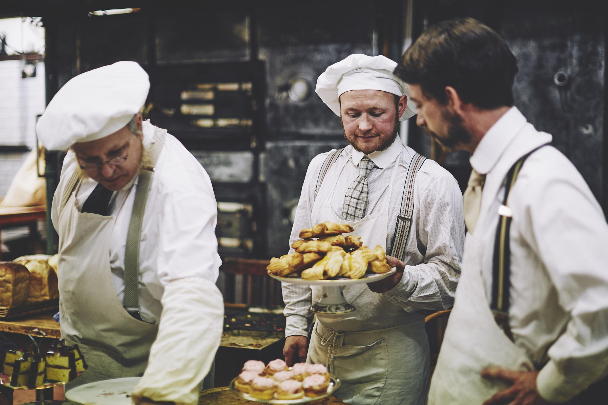

What was surprising to them was the distinct lack of machinery even in the mid-1800s.
In an age where people were flocking to the cities for industrial work involving new technologies and better pay, machinery was nowhere to be found in the bakery. Hours were still spent toiling over troughs and coal fired ovens, no kneading machines or temperature-controlled ovens in sight. Even though bread was just as essential a food source as before, bakers suffered excruciating work conditions.
Baking was seen as unpleasant work, and British people were reluctant to do it, especially with rampant flour adulteration scandals and accounts of bakers' sweat and hair being kneaded into the dough, as many bakers kneaded shirtless. Immigrants often took on baking because it was such an undesirable job.
However, the emergence of standalone stores (ie. bakeries and patisseries) changed this status.

Bakers never had their own stores until the late 1800s, before which everything was delivered by cart to consumers. Bakers who diversified from solely bread to pastries and cakes were able to gain more respect and start their own businesses.
Only then did technology— industrial stand mixers and temperature-controlled ovens— become more integral to baking, when bakers themselves became able to afford technology rather than their employers.
In many cases in the current day, there are in fact many people, like these Victorian Bakers, who are stuck with work that could be aided by machines but for whom machines are not available; on the other end of the spectrum, there are laborers who are given machines to work with, but who are expected to double, triple, or quadruple their rate of manufacturing. Much of the time, these workplace practices, especially in larger operations, are intended to create larger profits for their companies (there’s a reason why so many commercial goods are manufactured in China, where labor is cheap but workers are generally efficient.)